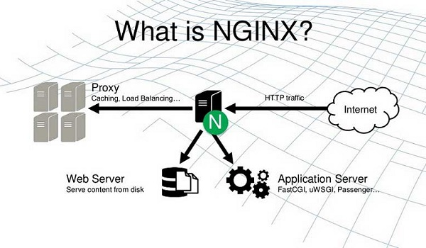

|  |
Nginx là gì?Nginx là một máy chủ proxy ngược mã nguồn mở (open source reverse proxy server) sử dụng phổ biến giao thức HTTP, HTTPS, SMTP, POP3 và IMAP. Nginx thường được chọn để cân bằng tải (load balancer), HTTP cache và máy chủ web (web server). Nginx là một web server mạnh mẽ và sử dụng kiến trúc đơn luồng, hướng sự kiện vì thế nó hiệu quả hơn Apache server nếu được cấu hình chính xác. Ngày càng được ưa chuộng và có mặt trên khắp các máy chủ Linux, Nginx hiện nay được sử dụng bởi 1- 4% tổng số lượng tên miền toàn thế giới, điển hình là Facebook, Microsoft, Google, Apple,… |
Nginx cung cấp cơ chế bộ nhớ đệm tốt hơn so với các máy chủ khác, giúp tăng hiệu suất của ứng dụng khi người dùng truy cập cùng một địa chỉ trong một khoảng thời gian ngắn.
Nginx là máy chủ web trọng lượng nhẹ chuyển tiếp các yêu cầu người dùng đến máy chủ ứng dụng.
Quy tắc ghi lại của Nginx mang lại sự linh hoạt hơn để định cấu hình chuyển hướng vĩnh viễn hoặc chuyển hướng tạm thời cho một số URL.
Nginx hoạt động tốt nhất khi được làm máy chủ proxy giao diện người dùng cho bất kỳ ứng dụng nào.
Nginx có thể dễ dàng tùy chỉnh, dễ dàng phân phối qua HTTPS, có thư mục tùy chỉnh hoặc máy chủ ngược dòng proxy.
NCân bằng tải là thứ mà Nginx cần cải thiện nhiều hơn so với các máy chủ khác.
Giám sát của Nginx được đánh giá là tốt, nhưng chưa phải tốt nhất. Tức là Nginx phải cung cấp tính linh hoạt hơn trong việc định cấu hình nhiều tình huống hơn.
QNginx cần cải thiện cơ chế lưu trữ, cung cấp các lệnh để có được đầu ra mong muốn từ các bản ghi.
Rất khó để điều hướng giữa trang chủ Nginx và bộ phận hỗ trợ khách hàng.